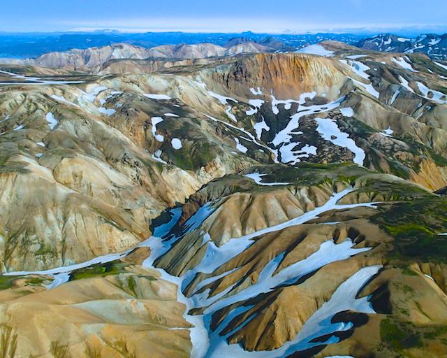

20150910 - September Trip to Iceland

Lodging
Stayed for six days around Reykjavik driving to other destinations, choosing a BnB via
www.airbnb.com/s/Iceland.
Planning most everything in advance proved very useful as the rental's wifi did not work.
Did not data roam on the phone, and most of the interesting places won't have cell reception anyway.
Cell phones are effectively useless as they are cloud navigation only devices,
and GPS is also mostly fail, as it is impossible to figure out how to input various destinations.
Instead had pre-printed paper maps and memorized the route to grocery, etc.
Next time I'll try pre-printing the GPS coordinates, and standard full addresses as well.
Auto Rental
Rented a manual Suzuki Jimmy 4x4 from Budget.
At first they didn't have a Jimmy and forced us to get an "upgrade" to a Nissan Qashqai.
This was a serious downgrade.
Avoid the Nissan Qashqai at all costs: it has a horrible computer controlled throttle which partly takes over during shifts,
it auto turns off the engine when you are braked in neutral,
it's clutch feels like it does not exist,
and it drives like a front-wheel-drive car instead of a 4x4.
Lucky for us the previous renters had topped off the tank with petrol instead of diesel.
Early in the trip, I noticed what felt like a bad fuel pump, so I returned it.
The girl at the rental return didn't notice the problem on a test drive,
and started telling me they were going to charge me to fill up the tank on the exchange.
Eventually they brought over their mechanic who had the smarts to sniff the diesel tank,
and knew exactly what was wrong.
Thankfully I left with a Jimmy, and they tossed in a free GPS for the trouble.
The Jimmy is great, tiny, easy to heel-toe, a little under powered, ability to go between {2WD, 4WD, and 4WD low},
and fun on non-paved roads.
But one word of warning, driving a Jimmy in Iceland's very windy weather can be more of an exercise in sailing rather than driving.
Either that or the Jimmy I rented was way out of alignment.
Felt like the 4x4 didn't have enough toe-in in the front,
very twitchy, near impossible to drive in a straight line at speed with the combination of Icelandic cross winds,
warped tyre grooves in the roads, and the wake of large trucks going the opposite direction.
Lots of fun.
Food
Lived off cheeses, smoked fish, and water for breakfast.
Lots of great places to grab dinner around Reykjavik we liked:
Fiskmarkaðurinn,
Grillmarkaðurinn, and
Forréttabarinn.
Short summary: langoustine are quite awesome, horse was fantastic, minke tastes like one would expect from a red meat mammal with a twist, and puffin tastes like a cross between liver and fish.
Also managed to catch a live DJ'ed plaza broadcast of the Iceland vs Kazakhstan game one night down-town in the plaza next to the Fiskmarkaðurinn.
Excursions
Found
www.extremeiceland.is to be quite useful as it collects a huge amount of options in one place with photos. We did a 2 hour Cessna air tour from
www.eagleair.is on our first full day in Iceland. It is the best way to really understand Iceland. The photo in this post was taken on that flight. We pre-booked, and got super lucky because that day was the only day not rained out in the week we were there. Tried to do a RIB boat whale watching tour, but that got canceled due to weather. Did one of the tours to a man-made cave in the Glacier Langjökull, was the wife's favorite part of the trip. The dirt road drive to the base of Langjökull was quite fun, I'd advise just skipping standard hotel to event tour bus options. The South drive to Sólheimajökull has a lot of great waterfalls. Apparently this was a great time to attempt to see the Northern Lights, except the weather didn't work out, and we didn't pre-search a good viewing location (fail on no wifi). Last day tried the
Blue Lagoon which seems like a man made pool covered in some mineral sand which gets geo-thermal sea water runoff from the power plant. The contrast between being freezing out of the water and cooked in the water was quite refreshing. I would really like to go back and do the natural ice cave tours in the winter.